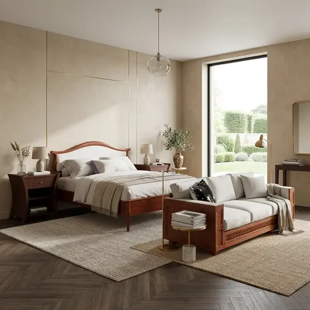
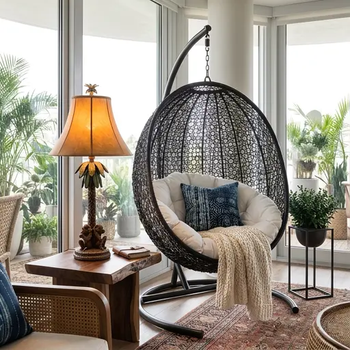
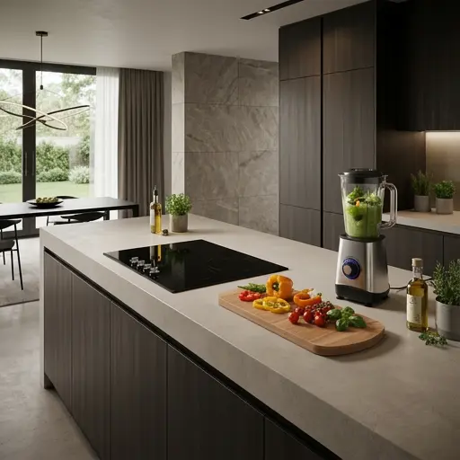

Get inspired
Timeless elegance
Create a calm and inviting atmosphere with a bedroom that blends timeless elegance with modern comfort. Warm wood tones bring depth and character to the space, while soft neutral textiles create a sense of balance and relaxation.
Natural materials, subtle details and carefully chosen furniture make the room feel both sophisticated and personal. The combination of beige shades and rich walnut wood adds warmth without overwhelming the space.


A cozy corner
Transform an ordinary corner into a peaceful retreat designed for relaxation and inspiration. Natural textures, rich wood tones and soft fabrics create a warm and inviting atmosphere.
Elevate Your Everyday Kitchen
Elevate your kitchen with carefully chosen accessories that combine everyday functionality with timeless design. From sleek blenders to elegant oil bottles, each detail adds both practicality and character to your kitchen while complementing the surrounding materials.
Natural textures, refined finishes and subtle colours create a cohesive look that feels both sophisticated and effortless. Discover kitchen essentials that make daily routines more enjoyable while bringing a touch of understated elegance to your home.
